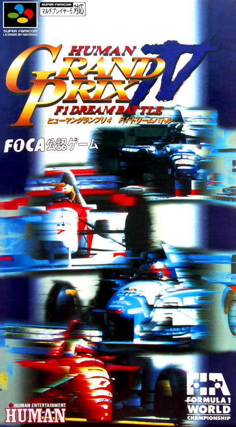
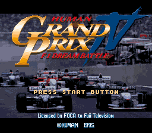
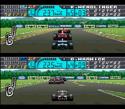

History
The game itself: who made it, when, and what it contains.
Human Grand Prix IV - F1 Dream Battle
Human Grand Prix IV - F1 Dream Battle was developed and published by Human Entertainment for the Super Famicom. It is a Japan-exclusive release and was never published in North America or Europe, which is why the series is far less widely known outside Japan than its size and ambition would suggest.
The cartridge carries the serial SHVC-AG4J-JPN and the internal game code K6. Boards seen in the wild use PCB type SHVC-1J3M-20 with a date code of 9530, placing manufacture in September 1995. It uses no special enhancement chips — no SuperFX, no SA-1 — so everything it does is plain Super Famicom hardware. Progress is kept on a battery-backed 64 kilobit save, and the game supports one or two players simultaneously rather than by alternating turns.
The game carries a 1995 Human copyright, and its own data agrees: the roster is the 1995 Formula One season, with thirteen teams and twenty-six drivers arranged two to a team — Benetton, Tyrrell, Williams, McLaren, Footwork, Simtek, Jordan, Pacific, Forti, Minardi, Ligier, Ferrari and Sauber. Beyond that season roster the game stores a further pool of drivers, including several who had raced in earlier eras.
Alongside the drivers who start on the grid, the game provides four editable driver slots. They are not part of the starting field; a player edits them and swaps them into a team's line-up. Each of the four has a full driver record of its own — name, nationality, date of birth — and its own portrait, all of which the game lets the player change.
Circuits are named by location rather than by official circuit name throughout, so the course list reads HOCKENHEIM, MONTREAL, BUENOS AIRES, INTERLAGOS and RODRIGUEZ where other games of the period would print a formal circuit title. Weather is a direct menu choice rather than a random event, offering fine, cloudy and rain, and race length is selectable in the same menu.



Human Entertainment
Human Entertainment was founded in May 1983. It began as two separate companies, TRY Corporation and Communicate, Inc., which merged under the name Sonata before becoming Human Corporation in 1989.
The company built its reputation on sports and simulation. Its best-known lines include the Fire Pro Wrestling series, Formation Soccer — released in the West as Super Soccer — and Final Match Tennis. Racing was a consistent thread through its catalogue, with the Human Grand Prix games and Fastest 1. It also produced Dance Aerobics in 1987, described as the first music rhythm video game, and later moved into horror with the Clock Tower and Twilight Syndrome series and the 3D open-world Mizzurna Falls in 1998.
In January 2000 Human Corporation declared bankruptcy, having failed to negotiate a restructuring deal over an outstanding debt of 3.79 billion yen as of November 1999.
Its influence outlived it. Former Human staff went on to found Nude Maker, Sandlot, Spike and Grasshopper Manufacture, the last of these established by Goichi Suda. For a studio that closed at the start of the 2000s, that is an unusually long shadow — several of those companies are still working today.
Ayrton Senna in Japanese racing games
Ayrton Senna died at Imola on 1 May 1994, midway through the era this series covers. His standing in Japan was extraordinary, and Japanese racing games of the period reflect it: he appears by name in games built around seasons he did not live to contest, and Human's own earlier Grand Prix entries carried him among their selectable drivers.
His name survives inside Human Grand Prix IV even so. The game's circuit lap-record tables credit him at Imola, Aida, Adelaide and Mexico City, listing him with the Williams and McLaren teams of 1991 to 1994 - records held by a driver the 1995 season roster no longer contains.
Monaco, 31 May 1992
The sixth round of the 1992 season is the race that explains why this edition pairs Senna with McLaren in 1992 rather than with any later team.
Nigel Mansell's Williams FW14B was the dominant car of that year by a wide margin - he had won the opening five races outright - and at Monaco he was leading again, comfortably. With roughly seven laps left he pitted unexpectedly, having felt a vibration generally reported as a loose wheel nut. That handed the lead to Senna, whose McLaren MP4/7A was simply the slower car.
Mansell rejoined on fresh tyres and closed on Senna at a startling rate, then spent the closing laps directly behind him, weaving and probing for a way through on the one circuit in the calendar where overtaking barely exists. Senna placed his car perfectly lap after lap, never resorting to a move anyone could call unfair, and won by around two tenths of a second. It was his fifth Monaco victory and his fourth in succession.
Senna finished that championship fourth, so 1992 does not read as a peak season on the standings alone. Monaco is why the standings are the wrong measure: the slower car won on merit, under sustained pressure from the fastest driver and car combination of the year, and the drive is routinely named among the greatest in the sport's history.
That is the reasoning behind the team and year shown in this edition's driver slot. McLaren was the era Senna is remembered for, and 1992 is the earliest year this game offers - its team entries run from 1992 to 1995. Pairing him with 1994 Williams would have named the season he was killed rather than the era he defined.
Sources
- Cartridge, board, save and player-count details: SNES Central — Human Grand Prix IV: F1 Dream Battle
- Human Entertainment company history: Wikipedia — Human Entertainment
- Cover and in-game imagery: LaunchBox Games Database — Human Grand Prix IV: F1 Dream Battle
- Season roster, team line-ups, circuit naming and lap-record entries were read directly from the game's own data.